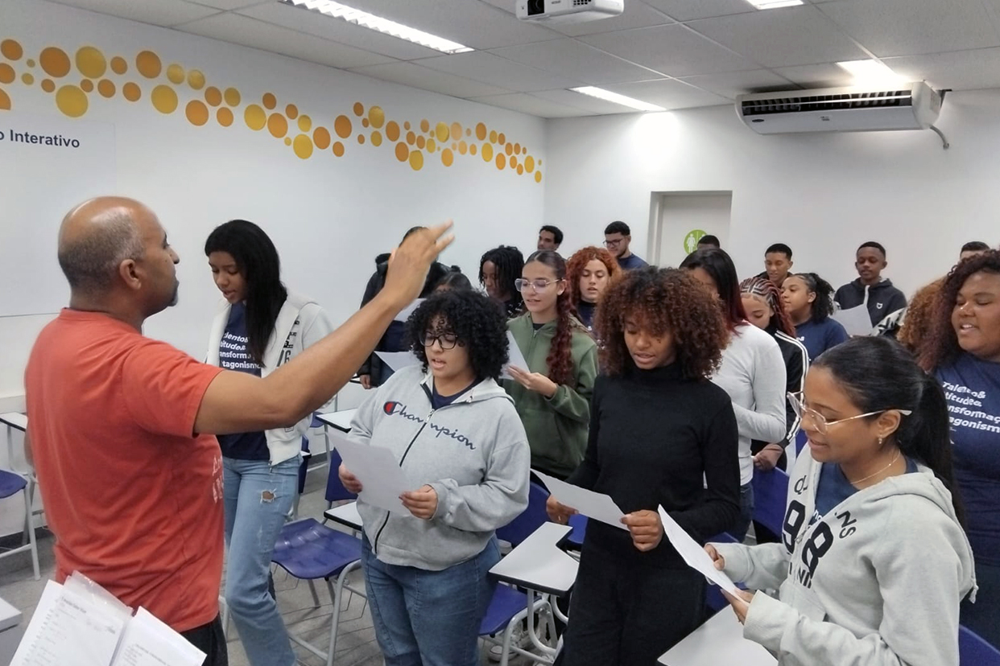
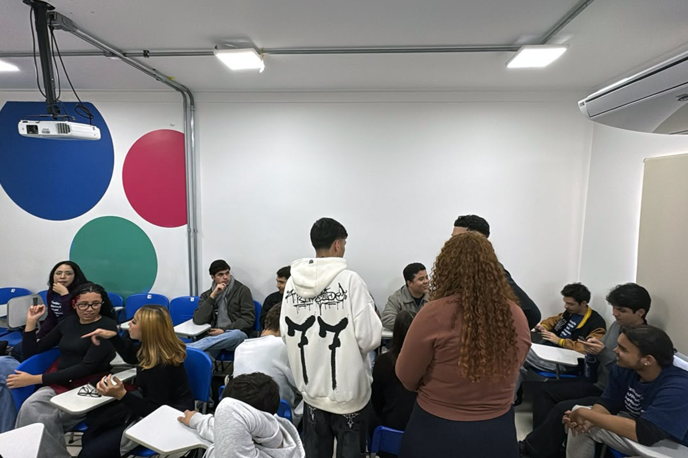
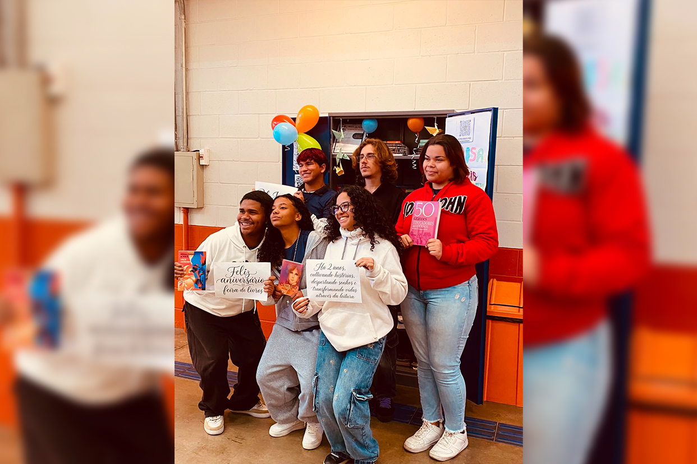
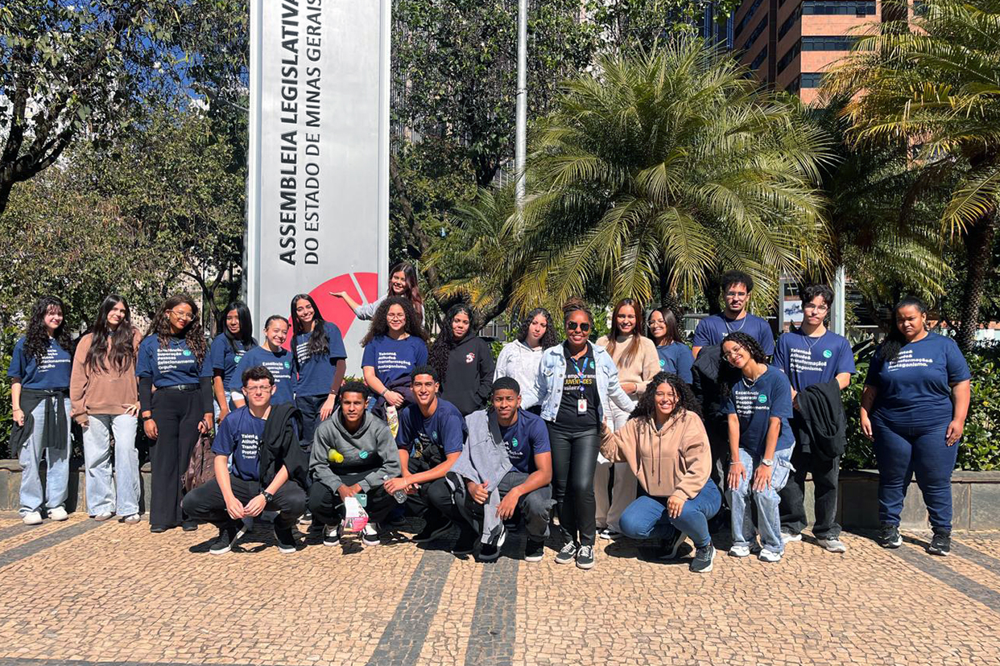
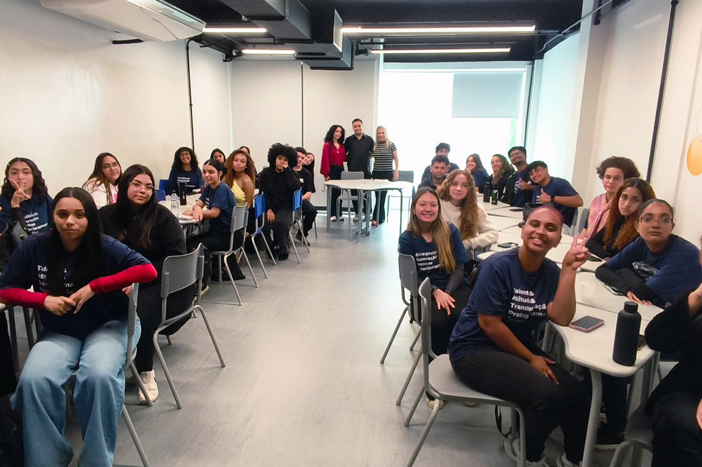
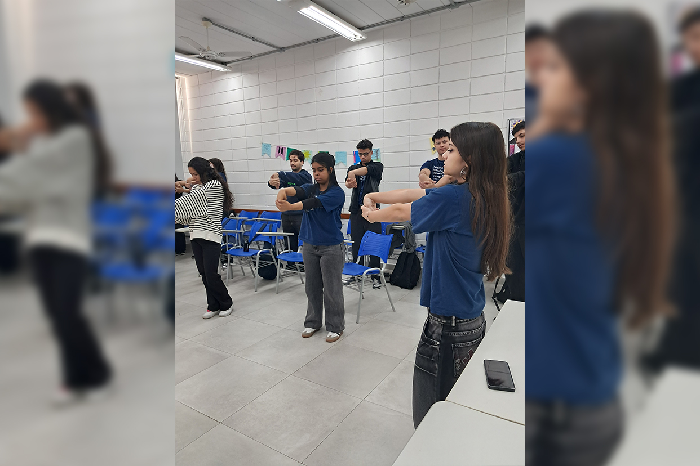
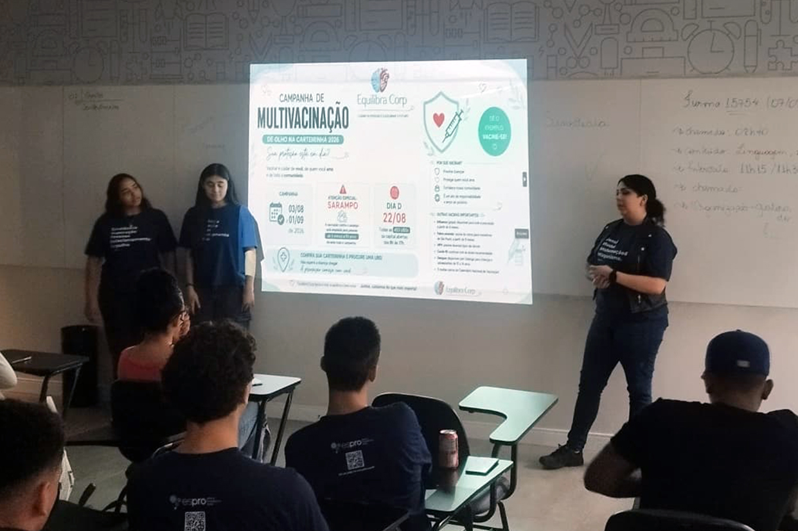
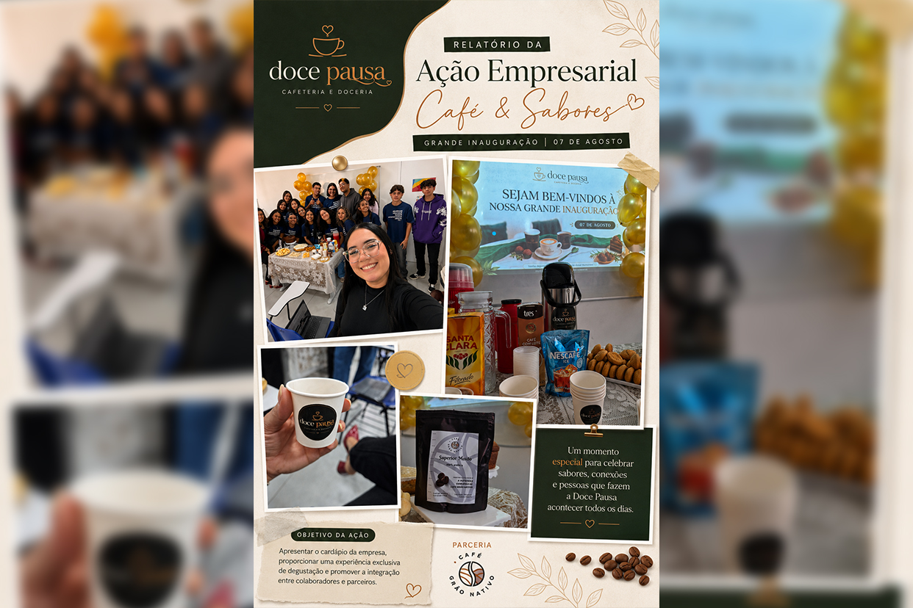
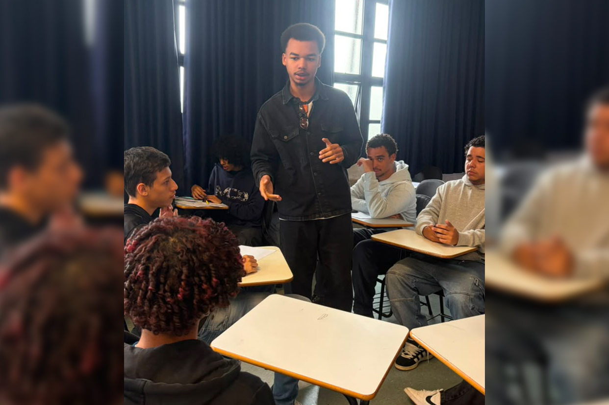
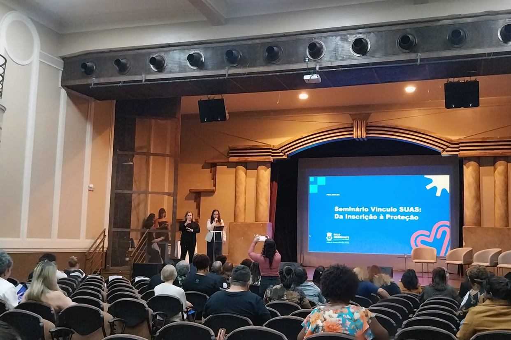

A unidade administrativa do Espro em Belo Horizonte (MG) se transformou em um verdadeiro palco de aprendizado e expressão cultural. Mais de 300 jovens participaram de uma imersão cultural que aliou desenvolvimento pessoal, técnica e muita harmonia, conduzida pelo maestro Leonardo Neres. Ao longo da oficina, os participantes exploraram exercícios de respiração, postura, aquecimento vocal, articulação, canto coral e percepção rítmica.
A experiência também mostrou como a voz pode ser uma importante ferramenta de expressão no ambiente profissional. Ao explorar o próprio potencial vocal, os jovens trabalharam comunicação, desinibição, autoconfiança, dicção, clareza na fala, escuta e trabalho em equipe, além de desenvolver habilidades que ajudam a romper barreiras como o medo de falar em público. “A música tem o poder de conectar as pessoas de uma forma única. Ver a energia e a entrega desses mais de 300 jovens, descobrindo o potencial de suas próprias vozes, é a prova de que a arte e a educação caminham juntas na construção do futuro”, destacou o maestro Leonardo.
Descubra como música e aprendizagem entraram no mesmo ritmo
No segundo semestre, o projeto Incentivo Literário deu lugar ao Desenvolvimento de Projetos, uma proposta que amplia a autonomia dos participantes por meio de pesquisas sobre grandes nomes do empreendedorismo mundial, empresários brasileiros e a representatividade feminina no ambiente corporativo. Com orientação da instrutora Caroline Buckl, os próprios jovens conduzem as atividades, pesquisas e produções.
Ao longo do semestre, esse conhecimento será colocado em prática por meio de apresentações mensais, produção de cartazes sobre a trajetória e o legado dos nomes pesquisados e construção coletiva de uma maquete representando o mundo empresarial. No fim do ano, os trabalhos serão expostos para outras turmas e os jovens assumirão também o papel de palestrantes, compartilhando os principais aprendizados e reflexões construídos durante o projeto. A experiência coloca em movimento habilidades como pesquisa, comunicação, criatividade, trabalho em equipe, autonomia e liderança.
Acompanhe essa jornada da pesquisa ao protagonismo
Na unidade de Jundiaí (SP), o que começou em julho de 2024 com a turma 14211 continua escrevendo novos capítulos. Após o encerramento da turma, a Feira Itinerante de Troca de Livros passou o bastão para a turma 17264, que deu continuidade ao projeto. Em dois anos, a iniciativa cresceu com novas doações, conquistou leitores e ganhou um armário que mantém os livros disponíveis aos jovens da unidade durante toda a semana. Atualmente, o acervo reúne 195 títulos, além de contar com uma equipe responsável por planejar as ações e acompanhar empréstimos, trocas, devoluções e doações por meio de planilhas de controle.
Para ampliar ainda mais o contato com a leitura, o projeto também passou a utilizar as redes sociais como espaço para estimular os jovens a compartilhar suas experiências com os livros. A iniciativa segue buscando novas formas de aproximá-los da leitura e já promoveu ações especiais, como uma atividade realizada no Dia Mundial do Livro.
Explore os novos capítulos dessa história de incentivo à leitura
O aprendizado sobre direitos, deveres e cidadania ganhou um novo cenário para os 30 jovens da turma 17263. No dia 29 de junho, acompanhados pela instrutora Keliane Eva, eles trocaram a sala de treinamento pela Assembleia Legislativa de Minas Gerais (ALMG), em Belo Horizonte (MG), para acompanhar uma audiência pública que contou com a presença do Fórum de Enfrentamento e Combate ao Trabalho Infantil e Profissionalização do Adolescente Trabalhador de Minas Gerais (FECTIPA/MG) e abordou o tema Combate ao Trabalho Infantil e Proteção ao Adolescente. A visita proporcionou uma verdadeira imersão no funcionamento das instituições públicas e aproximou os jovens de discussões que fazem parte da realidade social.
A experiência permitiu compreender de perto como questões da sociedade chegam aos espaços públicos de discussão e reforçou a importância da participação cidadã. “Mais do que prepará-los para o mercado de trabalho, o Espro tem o compromisso de formar cidadãos conscientes. Ver esses 30 jovens ocupando o espaço do poder legislativo, observando e absorvendo política pública na prática, é um passo gigante no desenvolvimento de cada um deles”, destacou a instrutora Keliane Eva. A visita consolidou que entender o próprio papel na sociedade também é parte da construção do futuro.
Confira os registros dessa experiência na Assembleia
Histórias de quem já viveu a aprendizagem estão abrindo novas possibilidades de troca com os jovens do Espro. Essa é a proposta do Pratas da Casa, projeto que convida ex-aprendizes que estão construindo suas carreiras para retornar ao Espro e compartilhar experiências sobre suas trajetórias profissionais e acadêmicas. Os primeiros convidados foram Renan e Nathalia, ex-aprendizes da Schindler, que relembraram suas passagens pelo Espro e conversaram sobre a importância da aprendizagem e das conexões construídas nesse período para suas carreiras.
O encontro criou uma ponte entre diferentes momentos de uma mesma jornada, aproximando jovens que estão dando os primeiros passos no mundo do trabalho de profissionais que também começaram no Espro. A proposta é dar continuidade ao Pratas da Casa, trazendo outros ex-aprendizes para compartilhar vivências, caminhos e aprendizados que possam ampliar o repertório dos jovens e contribuir com sua formação.
Conheça as trajetórias que marcaram esse primeiro encontro
As terças-feiras ganharam um ritmo diferente para a turma 17569, acompanhada pela instrutora Maria Tortato na unidade de Itaguaçu (SP). A jovem Rayane, estudante de Educação Física, passou a conduzir momentos de ginástica laboral logo no início do treinamento, com exercícios de alongamento realizados junto aos colegas. Durante a prática, ela explica os benefícios dos movimentos para o corpo e reforça o cuidado para que ninguém ultrapasse os próprios limites.
A proposta foi bem recebida pela turma e, além de incentivar a prática de exercícios físicos, tem contribuído para fortalecer a convivência e a integração entre os jovens. A ideia é manter a ginástica laboral durante todo o período de permanência da turma, incorporando à rotina um momento de cuidado, aprendizado e movimento.
Entre no ritmo e confira os registros da prática
A conscientização virou ação para os jovens da turma 17574, acompanhada pelo instrutor Didier Melo, na unidade de Santo Amaro (SP). Por meio da empresa júnior Equilibra Corp, os jovens percorreram diferentes salas da unidade para conversar com outros jovens e incentivar a participação na Campanha de Vacinação contra o Sarampo. A mobilização e o engajamento já trouxeram resultados, com participantes enviando seus comprovantes de vacinação e reforçando o compromisso com a saúde coletiva.
Durante a ação, a turma também compartilhou informações sobre a transmissão do sarampo e destacou a vacinação como principal forma de prevenção, reforçando a importância da imunização para evitar a circulação do vírus.
Acompanhe como essa mobilização ganhou força entre os jovens
Da criação da empresa ao atendimento ao público, os jovens da turma 15873, da unidade de Brasília (DF), acompanhados pela instrutora Jackeline Batista, assumiram diferentes responsabilidades para tirar uma ideia do papel. No Gestores do Futuro, eles deram vida à empresa jovem Doce Pausa – Cafeteria e Doceria e desenvolveram a ação Café & Sabores.
Na prática, cada etapa se transformou em uma oportunidade de desenvolver competências importantes para o ambiente profissional, como planejamento, organização, tomada de decisão, divisão de responsabilidades, trabalho em equipe, divulgação da marca, construção de parcerias e atendimento ao público. O resultado foi uma experiência que reuniu degustação de doces, salgados e diferentes preparos de café, como café gelado, cappuccino e café árabe, este último em parceria com o Café Grão Nativo. A ação também contou com a despedida da jovem Laura, integrante do setor de Administração da empresa, em um momento de confraternização entre os participantes.
Acesse os bastidores dessa experiência de gestão
Diferentes perspectivas sobre um processo seletivo aproximaram a turma 16915, da Aprendizagem, acompanhada pelo instrutor Diego Ferreira, e a turma 18139 da FMT, acompanhada pela instrutora Maria Cristina, em uma experiência construída pelos próprios jovens. Após estudar as etapas de Recrutamento e Seleção no módulo de Recursos Humanos, a turma 16915 assumiu a organização e a condução da atividade, preparando vagas fictícias, entrevistas, dinâmicas individuais e em grupo, avaliações e critérios para a escolha dos candidatos. Do outro lado, os jovens da FMT participaram como candidatos e vivenciaram as diferentes etapas de quem está em busca de uma oportunidade.
O desafio continuou após as entrevistas. Os jovens responsáveis pela seleção analisaram os candidatos, tomaram decisões com base nos critérios estabelecidos e conduziram feedbacks tanto para os aprovados quanto para os não selecionados. A troca entre as turmas transformou conteúdos trabalhados em sala em uma experiência prática de comunicação, trabalho em equipe, tomada de decisão, liderança, escuta ativa, responsabilidade e capacidade de dar e receber feedbacks, além de fortalecer a aprendizagem colaborativa.
Descubra como foi estar dos dois lados de um processo seletivo
Representando o Espro em Belo Horizonte (MG), a assistente social Cilene Oliveira participou, no dia 23 de junho, do Seminário Vínculo SUAS: da Inscrição à Proteção, promovido pela Prefeitura de Belo Horizonte. O encontro reuniu gestores, trabalhadores do Sistema Único de Assistência Social (SUAS), conselheiros e representantes de Organizações da Sociedade Civil (OSCs) para discutir o fortalecimento da política de Assistência Social e a integração entre o poder público e a sociedade civil organizada.
Ao longo da programação, temas como o vínculo das entidades com o SUAS, a regularidade das inscrições nos Conselhos de Assistência Social e a atuação do Fórum das OSCs (FOSC-SUAS/BH) estiveram entre as discussões. O encontro também reforçou a importância da corresponsabilidade na execução dos serviços socioassistenciais e do diálogo entre a gestão pública e as organizações para qualificar o atendimento à população em situação de vulnerabilidade. Os conhecimentos e as atualizações compartilhados contribuem para aprimorar as práticas do Serviço Social e fortalecer a atuação institucional do Espro alinhada às diretrizes do SUAS.
Conheça os registros desse encontro em prol da Assistência SocialE aí, curtiu o novo formato e as informações do Minuto do Instrutor? Lembre-se de compartilhar com a gente o que tá rolando em sua unidade e dê sugestões de conteúdo!
Deixe um comentário aqui 👇🏼. Sua opinião é importante para nós!